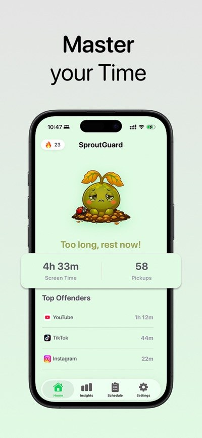
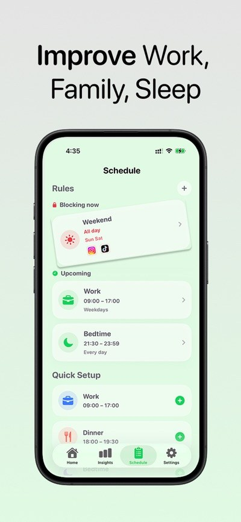
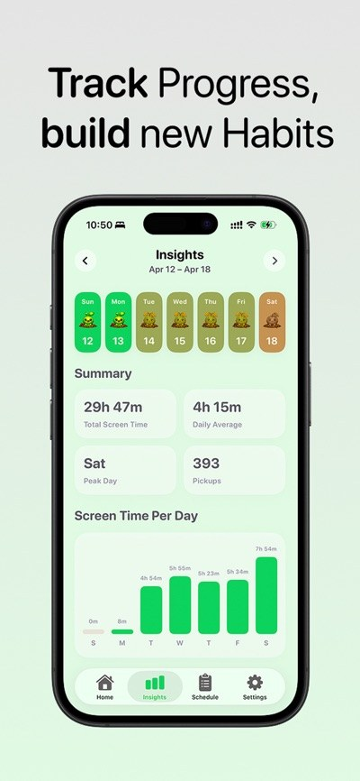
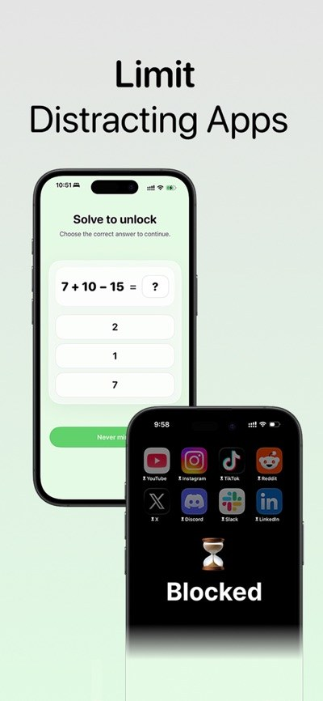

Elige qué te distrae.
Elige las apps que te atrapan. Usa Tiempo de uso de Apple para poner límites donde más los necesitas.
● Menos tiempo deslizando. Más tiempo viviendo.
Tu atención merece algo mejor. Bloquea las apps que te distraen, haz espacio para pausas conscientes y desarrolla hábitos digitales más saludables, día a día.
Descargar en el App StoreEmpieza gratis. Sin cuenta. Para iPhone.
 Pequeños pasos. Grandes cambios.Los buenos hábitos necesitan su espacio.
Pequeños pasos. Grandes cambios.Los buenos hábitos necesitan su espacio.No es otra cosa que tengas que revisar. Es una forma más amable de dejar el móvil.
Elige las apps que te atrapan. Usa Tiempo de uso de Apple para poner límites donde más los necesitas.
Crea horarios de concentración para trabajar, cenar, estar en familia, dormir o disfrutar del fin de semana. Tu tiempo, tus reglas.
Haz una pausa antes de deslizar, acumula rachas diarias de concentración y sigue tu progreso con estadísticas claras.
Descubre en qué se va tu tiempo. Después, decide a qué quieres dedicarlo.

Consulta de un vistazo tu tiempo de pantalla, las veces que coges el móvil y tus principales distracciones.

Haz espacio para el trabajo, la familia, el descanso y todo lo demás.

Mantén la constancia con estadísticas semanales y motivación diaria.

Abrir una app puede ser automático. Seguir usándola no tiene por qué serlo.
SproutGuard convierte las distracciones en pausas conscientes. Un breve ejercicio de respiración o un reto de matemáticas te da un momento para decidir qué hacer después.
Haz espacio para concentrarteUna forma más tranquila de usar Tiempo de uso de Apple.
SproutGuard utiliza las API de Tiempo de uso y Family Controls de Apple para ayudarte a elegir apps, aplicar reglas de concentración y consultar estadísticas. La supervisión y el bloqueo se ejecutan en tu dispositivo mediante los permisos del sistema de Apple.
No necesitas una cuenta. No vendemos tus datos personales de uso.
Lee nuestra política de privacidad (en inglés)Lo esencial para empezar, con más flexibilidad cuando la necesites.
Crea tu hábito diario de concentración.
Haz más espacio para tus rutinas.
Suscripción opcional con renovación automática. Consulta los precios actuales en la app. Gestiona o cancela la suscripción en los ajustes de tu cuenta de Apple.
No. Puedes empezar a usar SproutGuard sin registrarte ni iniciar sesión.
El permiso de Apple permite a SproutGuard bloquear las apps que elijas y mostrar estadísticas de uso. Puedes controlar estos permisos en los ajustes de tu dispositivo.
SproutGuard está diseñada para iPhone con iOS 18 o posterior. El bloqueo y las estadísticas requieren el permiso de Tiempo de uso.
Escribe a support.samwork@gmail.com si tienes preguntas, quieres informar de un error o proponer funciones.
Menos tiempo con el móvil. Más espacio para ti.
Descarga SproutGuard para iPhone